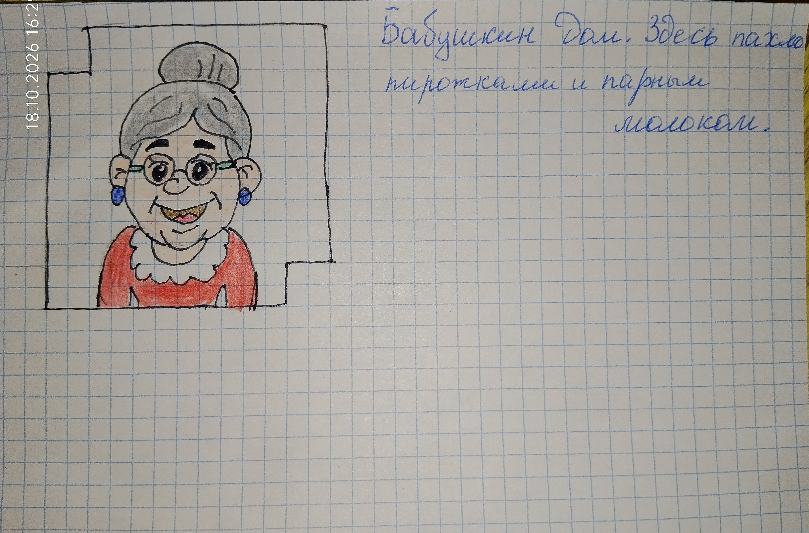

(Рисунок: Старая фотография с загнутым уголком)

Когда я была маленькой, родители отправили меня на лето в деревню к бабушке. Я тогда не знала, что это будет самое счастливое лето в моей жизни.
Теперь, спустя много лет, я вспоминаю те дни — и они встают передо мной, как живые. Запах парного молока и свежих пирожков. Лай собак и крик петуха. Тёплые руки бабушки и мягкая шерсть Ремки.
Эта книга — о моём деревенском детстве. О днях, полных приключений, смеха, слёз и любви. О времени, которое я никогда не забуду.